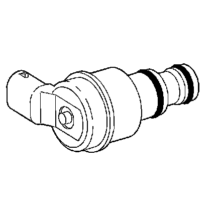
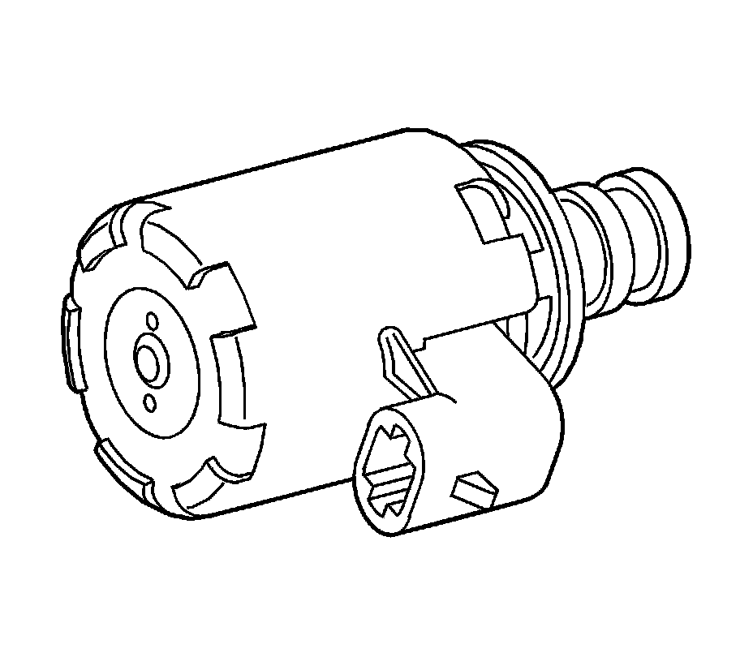
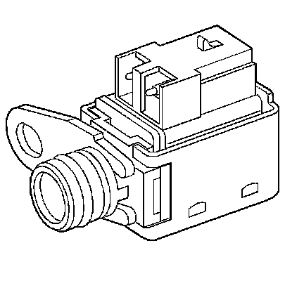
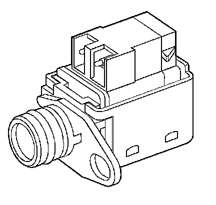
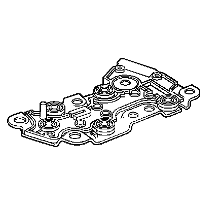
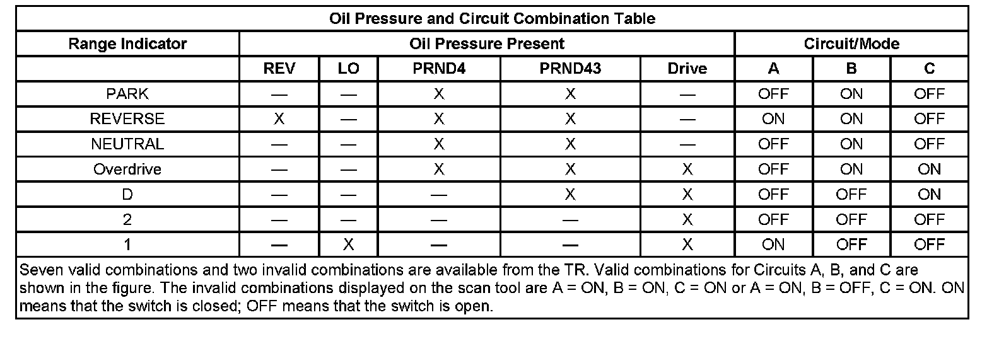
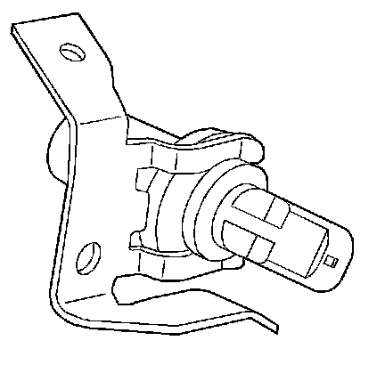
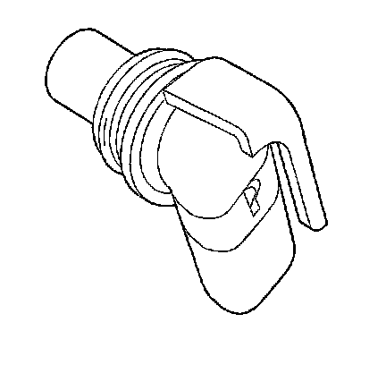
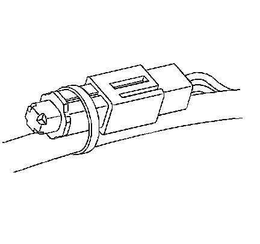
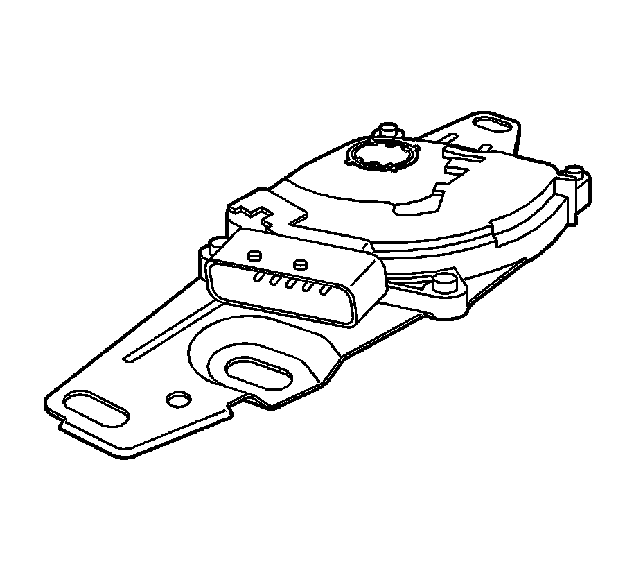

Electronic Component Description
Electronic Component Description
Torque Converter Clutch Solenoid Valve
Torque Converter Clutch Solenoid Valve:

The powertrain control module (PCM) energizes the torque converter clutch pulse width modulated (TCC PWM) solenoid valve, which is located on the transmission valve body. The TCC PWM solenoid valve acts on the TCC apply valve in order to control the torque converter clutch application.
The TCC PWM solenoid valve is pulse width modulated by the PCM. This means that the PCM pulses the solenoid so that the hydraulic pressure against the torque converter clutch modulates. This modulated pressure allows the TCC to slip slightly, thus keeping the TCC balanced just at the point of engagement.
One diagnostic code is associated with the TCC PWM solenoid valve Code P2761, TCC solenoid circuit - electrical, detects a fault in the TCC circuit. While Code P2761 is set, both fourth gear in hot mode and the TCC are inhibited. Shift adapts do not update and the MIL illuminates. Recovery can occur on the next ignition cycle.
Pressure Control Solenoid Valve
Pressure Control Solenoid Valve:

The pressure control (PC) solenoid valve is attached to the valve body. The valve controls line pressure by moving a pressure regulator valve against spring pressure. The PC solenoid valve takes the place of the throttle valve or the vacuum modulator, which was used on past model transmissions.
The PCM varies line pressure based on engine load. Engine load is calculated from various inputs, especially the throttle position (TP) sensor switch. Line pressure is actually varied by changing the amperage applied to the PC solenoid valve from 0 amps, high pressure, to 1.1 amps, low pressure. The PC solenoid valve current is periodically pulsed in order to prevent contamination from sticking the pressure regulator valve.
One diagnostic code is associated with the PC solenoid valve. Code P0748 sets when the PCM detects a difference of 0.16 amp or greater between the amperage commanded and actual amperage. While the code is set, the PC solenoid valve turns OFF. Recovery can occur after the next ignition cycle. Code P0748 does not sense a hydraulic condition, such as a stuck valve.
1-2 Shift Solenoid Valve
1-2 Shift Solenoid Valve:

The 1-2 shift solenoid (SS) valve is a normally open exhaust valve that is attached to the valve body. The PCM controls the solenoid by grounding the solenoid through an internal quad driver. The 1-2 SS valve is ON in FIRST and FOURTH gear. When commanded ON, the 1-2 SS valve redirects fluid to act on the 1-2 shift valve.
There are two PCM related diagnostic trouble codes (DTCs) associated with the 1-2 SS valve: P0751 and P0753.
The PCM monitors the 1-2 SS circuit for an open or short to ground condition. If the PCM detects an open or short to ground condition, then DTC P0753 sets. If the PCM detects an incorrect gear ratio, then DTC P0751 sets. When DTC P0753 or P0751 sets, the PCM commands maximum line pressure, freezes shift adapts from being updated, and inhibits 3-2 downshifts.
2-3 Shift Solenoid Valve
2-3 Shift Solenoid Valve:

The 2-3 shift solenoid (SS) valve is a normally open exhaust valve that is attached to the valve body. The PCM controls the solenoid by grounding the solenoid through an internal quad driver. The 2-3 SS valve is ON in THIRD and FOURTH gear. When commanded ON, the 2-3 SS valve redirects fluid to act on the 2-3 shift valve.
There are two PCM related diagnostic trouble codes (DTCs) associated with the 2-3 SS valve: P0756 and P0758.
The PCM monitors the 2-3 SS circuit for an open or short to ground condition. If the PCM detects an open or short to ground condition, then DTC P0758 sets. If the PCM detects an incorrect gear ratio, then DTC P0756 sets. When DTC P0758 or P0756 sets, the PCM commands maximum line pressure, freezes shift adapts from being updated, and inhibits 3-2 downshifts.
Automatic Transmission Fluid Pressure Manual Valve Position Switch
Automatic Transmission Fluid Pressure Manual Valve Position Switch:

The automatic transmission fluid pressure (TFP) manual valve position switch assembly is a gear range sensing device used by the PCM in order to sense which gear range has been selected by the vehicle operator. The TFP manual valve position switch assembly is located on the valve body, and consists of five pressure switches combined into one unit. The PCM applies system voltage to the TFP manual valve position switch assembly on three separate wires. These three circuits are either grounded or open, depending on which gear range has been selected, and on which combination of the five switches gave pressure applied to them.
When the vehicle is in PARK, with the key ON and the engine OFF, the normal state of the TFP manual valve position switch assembly will be DRIVE 2. When the key is ON and the engine is running, the normal state of the TFP manual valve position switch assembly is in PARK/NEUTRAL.
There are two possible combinations of the switches within the pressure switch manifold that do not represent an actual gear range. If the PCM detects either of these combinations, then a diagnostic trouble code (DTC) sets.
The PCM TFP DTC P1810 sets when the TFP switch indicates the following:
^ An illegal gear range
^ DRIVE4, DRIVE2 or REVERSE position before and after start-up
^ PARK/NEUTRAL with a ratio greater than 1.05
^ REVERSE with ratio indicating outside of REVERSE
^ DRIVE4, DRIVE3, DRIVE2 or DRIVE1 with ratio indicating REVERSE
While DTC P1810 is present, the PCM assumes DRIVE4 for shift pattern, sets line pressure to maximum, freezes shift adapts, and forces TCC ON with 4th gear commanded.

Automatic Transmission Input Shaft Speed, Output Shaft Speed Sensors
Automatic Transmission Input Shaft Speed, Output Shaft Speed Sensors:

Both of the automatic transmission input shaft speed (AT ISS) and the automatic transmission output shaft speed (AT OSS) sensors are magnetic induction sensors. The input and the output sensors are accessible from the left hand side of the transmission. The AT ISS sensor is located just forward of center and the AT OSS sensor is located near the rear. A voltage signal is induced in the AT ISS sensor by serrations, which are cut in the outside diameter of the forward clutch housing. Voltage is induced in the output sensor by gear teeth, which are pressed on the outside diameter of the rear carrier assembly.

The PCM uses speed information from these sensors in order to determine the following:
^ Whether the engine is running
^ Vehicle speed
^ Calculation of the gear ratio
^ Calculation of TCC slip
^ Calculation of turbine speed
Code P0502 and P0503 set if a fault exists in the AT OSS sensor circuit, and the PCM calculates a default value using the AT ISS sensor values. As long as the fault remains, and the code is set, the PCM also commands maximum line pressure, freeze shift adapts, and the MIL illuminates. If the fault is removed, normal operation resumes after the next ignition cycle.
Automatic Transmission Fluid Temperature Sensor
Automatic Transmission Fluid Temperature Sensor:

The automatic transmission fluid temperature (TFT) sensor assembly is a thermistor which is mounted in the wiring harness assembly. Low transmission temperature produces high resistance, while high temperature produces low resistance. The powertrain control module (PCM) supplies a 5-volt signal to the TFT sensor assembly through an internal resistor. Then the PCM measures the voltage drop in the circuit. Voltage is high when the transmission is cold and low when the transmission is hot.
The PCM uses the TFT sensor assembly in order to regulate torque converter clutch apply, as well as shift quality.
DTCs P0711, P0712 and P0713 indicate a fault in the TFT Sensor Assembly circuit. After the vehicle has been started, transmission temperature should rise steadily and stabilize between 90-115�C (194-239�F), depending on load. All 3 DTCs cause the PCM to use a default value of 140�C (284�F), thus reacting as if the transmission were hot in either case. When DTCs P0711, P0712 or P0713 are set, the PCM freezes the shift adapts from being updated, and the malfunction indicator lamp (MIL) illuminates. Some driveability symptoms will be noticed, especially when cold.
Transmission Range Switch
Transmission Range Switch:

The transmission range (TR) switch is part of the park/neutral position (PNP) and backup lamp switch assembly, which is externally mounted on the transmission manual shaft. The TR switch contains four internal switches that indicate the transmission gear range selector lever position. The powertrain control module (PCM) supplies ignition voltage to each switch circuit. As the gear range selector lever is moved, the state of each switch may change, causing the circuit to open or close. An open circuit or switch indicates a high voltage signal. A closed circuit or switch indicates a low voltage signal. The PCM detects the selected gear range by deciphering the combination of the voltage signals. The PCM compares the actual voltage combination of the switch signals to a TR switch combination chart stored in memory.